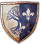

Treasure Hunts Overview
When adventuring across the Northern Realm, you should consider taking time to uncover a variety of lost or well-hidden troves of treasure. These are sub-divided into two types (all within the “Treasure Hunts” section of your Quest menu): “Treasure Hunts” (involving hidden treasure (and occasionally maps) and “Scavenger Hunts” (involving the search for Witcher gear diagrams of great importance). There are also other treasure chests to ransack; not related to either of the “tracked” quest types.
TREASURE HUNTS
In addition to chests or valuables just found strewn or hidden about you, there are 57 Treasure Hunts. These quick tasks start with you finding a clue, indicating the presence of treasure at a predetermined spot. This clue is almost always a note (or occasionally a map) on or near a deceased person, or a chest. There is usually a “glittering” indication that there’s something worth checking at the location, so loot it!
{kind=link}
When you find the note (or map), always check your Quest Items menu and read the parchment; it almost always updates your objectives (and map), and holds a clue to where the treasure may be found, or to the next part of your hunt. Now follow the advice in the guide, searching a (usually nearby) area for the chest that the key opens, or the note mentioned. Sometimes the chest is underwater, or hidden from prying hands. After the treasure is claimed, the hunt is complete!
The reward for finding a Treasure Hunt chest is one or more of the following:
|
Items: Random diagram(s), armor, gems, valuables, materials, alchemic ingredientas, and/or coins |
SCAVENGER HUNTS
Scavenger Hunts are much more involved quests for treasure of a specific nature. In each Scavenger Hunt, you must locate a number of diagrams of long-lost Witcher Gear—armor and weapons that are among the best items that you can craft. It is wise to undertake these quests as soon as possible, unless locations have particularly powerful beasts guarding them.
Searching for Witcher gear diagrams can begin in one of two ways:
1. You can explore the Northern Realms, and stumble across the location of a basic diagram for a piece of Witcher Gear, contained in a treasure chest.
2. You can explore the Northern Realms, and visit a merchant, trader, armorer or blacksmith, and purchase a set of maps or notes from them, which give clues to the whereabouts of particular diagrams. The precise vendors to visit are listed at the start of each Scavenger Hunt. Once you purchase and examine the notes or maps, they reveal the location of some of the upgraded gear diagrams from a particular Witcher School, while also starting the quest to find the basic gear too. Specific maps detail between three and six enhanced diagrams, so multiple maps or notes are needed to find everything.
{kind=link}
The actual Scavenger Hunt starts with the retrieval of the Basic diagrams for all parts of a particular Witcher School’s gear. Once you have all the basic diagrams, you can start accumulating better versions of the basic gear, which are only mentioned in notes or maps you must purchase from vendors. You need to collect these diagrams in a particular order: Basic, Enhanced, Superior, and finally Mastercrafted.
- You can also listen to the conversations of peasants or townsfolk across the land; they sometimes give hints at locations to search (though your guide makes this plan unnecessary).
- You must find the upgraded diagrams: Enhanced, Superior, and Mastercrafted.
- You need multiple maps or notes (purchased from multiple vendors) to uncover the whereabouts of all these upgraded diagrams.
- However, within the clues given by each map, specific diagrams can be found in any order. This means it’s usually easiest to visit each vendor, buy all their maps or notes pertaining to Scavenger Hunts, read them all, and start all the Scavenger Hunts at once.
- There are diagrams for Viper (Serpentine), Griffin, Cat (Feline), Bear (Ursine), and Wolven gear. Of these, the Scavenger Hunt for Viper gear (consisting of only two swords) does not have upgraded gear. However, there is Viper armor (and gauntlets, boots, and trousers), as well as Venomous Steel and Silver swords that can be gathered in an unmarked quest, as part of the Hearts of Stone Main Quest. Consult that Scavenger Hunt for the specifics.
- The Blood and Wine expansion introduces six additional Scavenger Hunts. The first is a simple introduction to the Grand Master armorer Lazare Lafargue of Beauclair. There are five Scavenger Hunts for Grandmaster diagrams from the Griffin, Cat (Feline), Wolf, and Bear (Ursine) Schools, as well as the fabled Manticore School. Collect these diagrams (with the exception of the Manticore School parchments) after you’ve had Mastercrafted armor for each school made, as these are needed to upgrade each piece of Witcher Gear to Grand Master quality!
SCAVENGER HUNT MAPS: A LIST OF VENDORS
The following table shows you the list of merchants, blacksmiths, and armorers you need to visit in order to gather all the necessary notes or maps to find every Witcher School Diagram.
| Vendor Type | Location | Map or Note Type | Diagrams to Unlock | Approxmiate Cost |
|---|---|---|---|---|
| Armorer | Midcopse | Edwin Greloff’s First Map | Enhanced Griffin Gear (boots, trousers, steel sword) | 20 |
| Armorer | Midcopse | Edwin Greloff’s Second Map | Enhanced Griffin Gear (armor, gauntlets, silver sword) | 40 |
| Armorer | Hierarch Square (Novigrad City) | Edwin Greloff’s Third Map | Super Griffin Gear (all) | 45 |
| Master Armorer | Hattori’s Armory (Novigrad City) | Edwin Greloff’s Fourth Map | Mastercrafted Griffin Gear (all) | 100 |
| Vendor Type | Location | Map or Note Type | Diagrams to Unlock | Approxmiate Cost |
|---|---|---|---|---|
| Merchant | Blackbough | Adalbert Kermith’s First Map | Enhanced Cat Gear (boots, armor, silver sword) | 15 |
| Blacksmith | Blackbough | Adalbert Kermith’s Second Map | Enhanced Cat Gear (gauntlets, trousers, steel sword) | 30 |
| Quartermaster | Crow’s Perch | Adalbert Kermith’s Third Map | Super Cat Gear (all) | 65 |
| Blacksmith | Lindenvale | Adalbert Kermith’s Fourth Map | Mastercrafted Cat Gear (all) | 125 |
| Vendor Type | Location | Map or Note Type | Diagrams to Unlock | Approxmiate Cost |
|---|---|---|---|---|
| Armorer | Kaer Trolde (Ard Skellig) | Ibrahim Savi’s First Map | Enhanced Bear Gear (silver sword, boots, armor) | 25 |
| Armorer | Kaer Trolde (Ard Skellig) | Ibrahim Savi’s Second Map | Enhanced Bear Gear (gauntlets, steel sword, trousers) | 45 |
| Armorer | Kaer Trolde (Ard Skellig) | Ibrahim Savi’s Third Map | Superior Bear Gear (all) | 95 |
| Armorer | Kaer Trolde (Ard Skellig) | Ibrahim Savi’s Fourth Map | Mastercrafted Bear Gear (all) | 190 |
| Vendor Type | Location | Map or Note Type | Diagrams to Unlock | Approxmiate Cost |
|---|---|---|---|---|
| Master Armorer | Hattori’s Armory (Novigrad City) | Well-Preserved Notes by Hieronymus on the Witcher Eigar | Enhanced Wolven Gear (silver sword, boots, armor) | 35 |
| Blacksmith | Lindenvale | Slightly Torn Notes by Hieronymus on the Witcher Eigar | Enhanced Wolven Gear (gauntlets, trousers, steel sword) | 40 |
| Armorer | Kaer Trolde (Ard Skellig) | Damp, Moldy Notes by Hieronymus on the Witcher Eigar | Superior Wolven Gear (armor, steel sword, silver sword) | 50 |
| Armorer | Hierarch Square (Novigrad City) | Heavily Faded Notes by Hieronymus on the Witcher Eigar | Superior Wolven Gear (gauntlets, boots, trousers) | 60 |
| Master Armorer | Hattori’s Armory (Novigrad City) | Worn-Out and Faded Notes by Hieronymus on the Witcher Eigar | Mastercrafted Wolven Gear (steel sword, armor, silver sword) | 70 |
| Armorer | Kaer Trolde (Ard Skellig) | Notes on Parchment by Hieronymus on the Witcher Eigar | Mastercrafted Wolven Gear (gauntlets, boots, trousers) | 85 |
Grandmaster Gear
| Vendor Type | Location | Map or Note Type | Diagrams to Unlock | Approxmiate Cost |
|---|---|---|---|---|
| Grandmaster Armorer | Lazare Lafargue (Beauclair) | N/A | Grandmaster Witcher Gear Scavenger Hunts | N/A |
OTHER TREASURE TYPES: HIDDEN TREASURE
There are plenty of other chests hidden in cellars or atop towers throughout the Northern Realms, and these are known as “Hidden Treasure”. These are chests containing one or more of the following: Coins, gems, diagrams, manuscripts, pages, notes, weapons, armor, equipment, or other items deemed worth your time finding. There is a vast number of these, and you are fortunate that the guide’s Atlas flags the location of each one. Aside from the following examples, you should check the Atlas maps for all other chests of note.
HIDDEN TREASURE: SMUGGLER’S CACHE
{kind=link}
{kind=link}
HIDDEN TREASURE: SPOILS OF WAR
{kind=link}
{kind=link}
HIDDEN TREASURE: GUARDED TREASURE
{kind=link}
{kind=link}
HIDDEN TREASURE: GOOD CHESTS
{kind=link}
{kind=link}
HIDDEN TREASURE: BETTER CHESTS
{kind=link}
{kind=link}
HIDDEN TREASURE: RELIC CHESTS
{kind=link}
{kind=link}
|
Name of Treasure Hunt |
Page |
| White Orchard | |
|---|---|
| Deserter Gold | 553 |
| Dirty Funds | 553 |
| Temerian Valuables | 554 |
|  Velen – No Man’s Land | |
| Grayrocks | |
| An Unfortunate Turn of Events | 554 |
| The Things Med Do For Coin… | 554 |
| Dowry | 555 |
| Blood Gold | 555 |
| Tough Luck | 556 |
| Lost Goods | 556 |
| The Descent | |
| Out of the Frying Pan, Into the Fire | 556 |
| Hidden from the World | 557 |
| Spitfire Bluff | |
| Sunken Treasure | 557 |
| A Costly Mistake | 557 |
| Queen Zukeyka’s Treasure | 558 |
| A Plea Ignored | 558 |
| The Mire | |
| Don’t Play with the Gods | 558 |
| The Dead Have No Defense | 559 |
| Sunken Chest | 559 |
 Novigrad Novigrad | |
| Grassy Knoll | |
| Coast of Wrecks | 560 |
| Battlefield Loot | 560 |
| Gustfields | |
 The Cursed Chapel The Cursed Chapel |
560 |
| A Dark Legacy |
561 |
| The Drakenborg Redemption |
561 |
| From Ofier’s Distant Shores |
562 |
| The Royal Air Force |
563 |
| The Secret Life of Count Romilly |
564 |
| A Surprise Inheritance |
564 |
| The Sword, Famine, and Perfidy |
565 |
| Tinker, Hunter, Soldier, Spy |
565 |
| Skellige | |
| Ard Skellig | |
| Inheritance | 566 |
| Freya Be Praised! | 566 |
| X Marks the Spot | 566 |
| Family Fortune | 567 |
| Pearls of the Coast | 567 |
| An Skellig | |
| Nifgaardian Treasure | 568 |
| Undvik | |
| Precious Haul | 568 |
| Ruins, Hidden Treasure, You Know… | 568 |
| Shortcut | 569 |
| Spikeroog | |
| Not Only Eagles Dare | 569 |
| Snidhall Isle | |
| Unlucky’s Treasure | 569 |
| Faroe | |
| Hidden in the Depths | 570 |
| Ironsides’ Treasure | 570 |
| The Duchy of Toussaint | |
 The Last Exploits of Selina’s Gang The Last Exploits of Selina’s Gang |
571 |
| What Was That About Again? |
571 |
| Curse of Carnarvona |
571 |
| Around the World in…Eight Days |
572 |
| The Black Widow |
572 |
| The Toussaint Prison Experiment |
573 |
| The Suffereing of Young Francois |
573 |
| But Other Than That, How Did You Enjoy the Play? |
573 |
| The Inconstant Gardener |
574 |
| Applied Escapology |
574 |
| Filbert Always Pays His Debts |
575 |
| Waiting for Goe and Doh |
575 |
| Spoontaneous Profits |
576 |
| Coin Doesn’t Stink |
452 |
| Don’t Take Candy from a Stranger |
454 |
{kind=link}
{kind=link}
{kind=link}
| Name of Scavenger Hunt | Page |
|---|---|
| Viper School Gear | 577 |
| Viper School Gear (Additional) | 577 |
| Griffin School Gear (Basic) | 579 |
| Griffin School Gear (Enhanced) | 580 |
| Griffin School Gear (Superior) | 582 |
| Griffin School Gear (Mastercrafted) | 583 |
| Cat School Gear (Basic) | 585 |
| Cat School Gear (Enhanced) | 587 |
| Cat School Gear (Superior) | 589 |
| Cat School Gear (Mastercrafted) | 589 |
| Bear School Gear (Basic) | 591 |
| Bear School Gear (Enhanced) | 593 |
| Bear School Gear (Superior) | 594 |
| Bear School Gear (Mastercrafted) | 595 |
 Wolf School Gear (Basic) Wolf School Gear (Basic) |
597 |
| Wolf School Gear (Enhanced) |
598 |
| Wolf School Gear (Superior) |
600 |
| Wolf School Gear (Mastercrafted) |
602 |
| Master Master Master Master |
604 |
| Grandmaster Griffin Gear |
605 |
| Grandmaster Feline Gear |
606 |
| Grandmaster Wolven Gear |
608 |
| Grandmaster Ursine Gear |
610 |
| Grandmaster Manticore Gear |
611 |
The Witcher® is a trademark of CD PROJEKT S. A. The Witcher game © CD PROJEKT S. A. All rights reserved. The Witcher game is based on a novel by Andrzej Sapkowski. All other copyrights and trademarks are the property of their respective owners. Learn more at thewitcher.com.